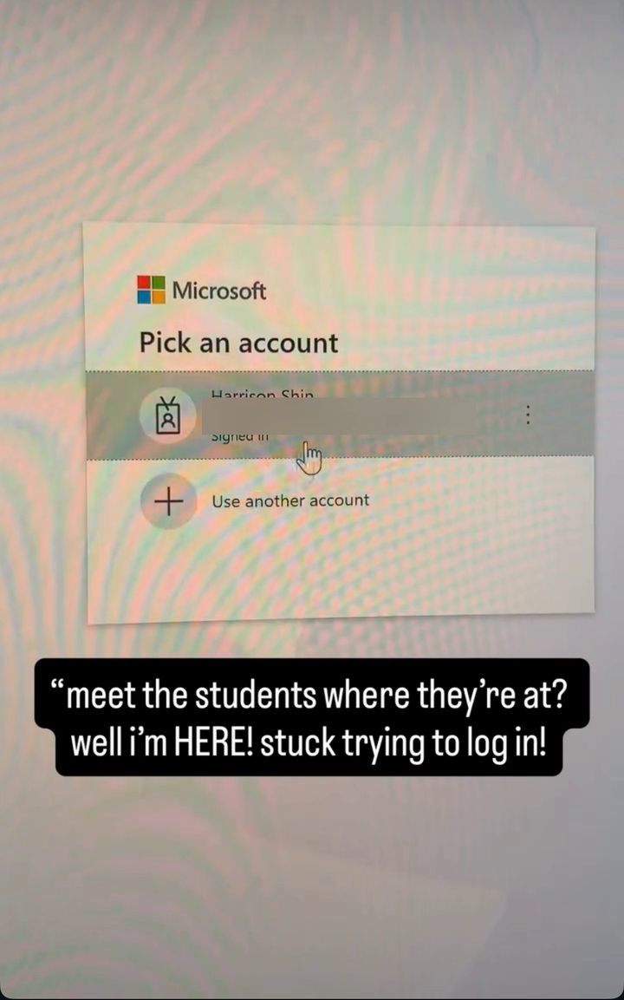
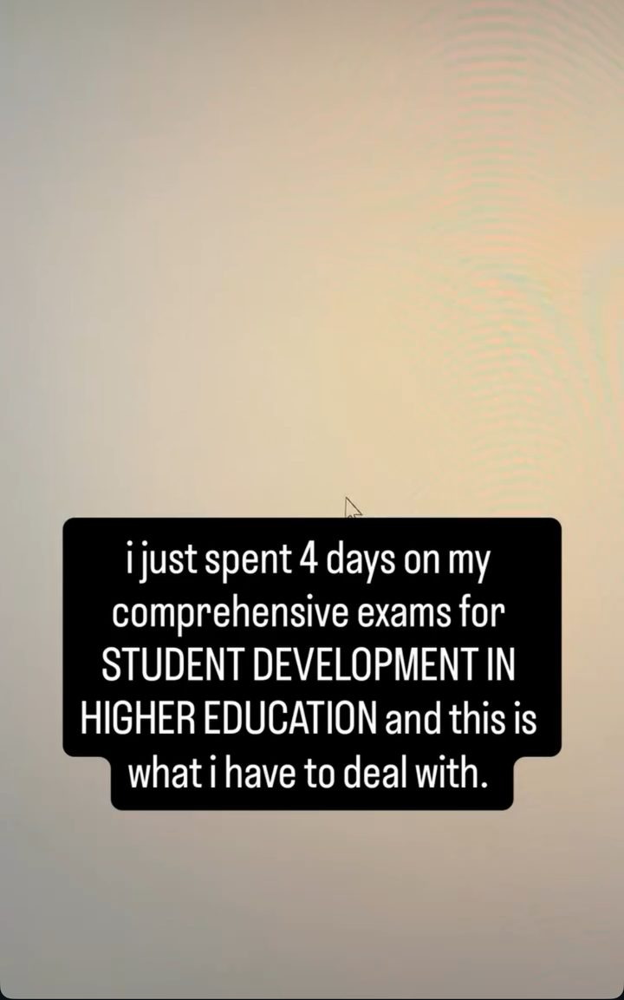
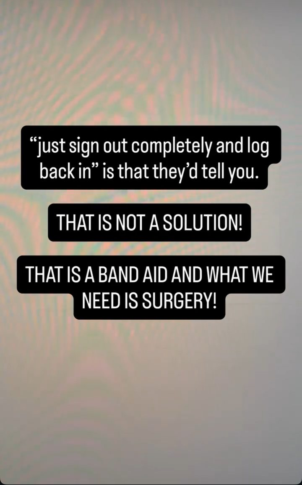
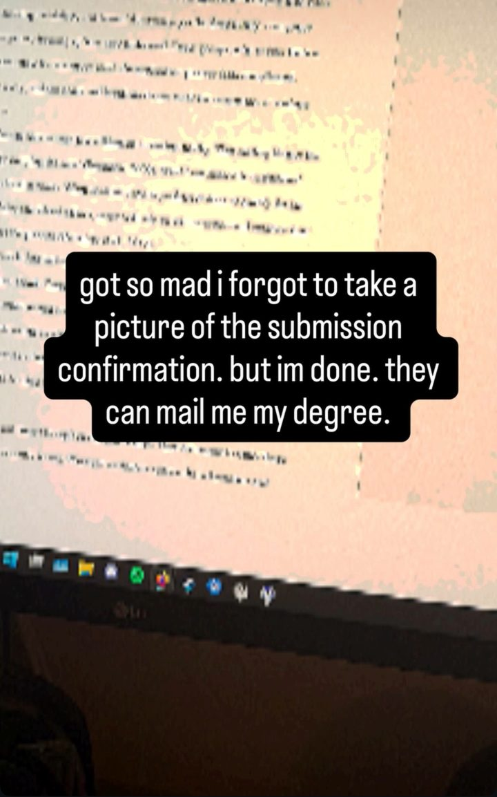

Stuck at the Sign-In Screen, or Nine Clicks From Done
On the night of October 26, a little before midnight, I finished four days of comprehensive exams for my M.S. in Student Development in Higher Education at Cal State Long Beach. I went to submit. CSULB's Microsoft login met me with "Pick an account."
I was already signed in. I clicked my account. The same screen came back. I clicked again. Same screen. No error message. No code. Just the picker, over and over.

In a 27-second clip, I click that signed-in account nine times. Every click returns me to the same place. You can hear me on the video: "How is higher education going to keep up?" And then, "Ridiculous."
In a student affairs program, we spend a lot of time talking about access: making sure the path to the work is actually usable when it counts. I had already done the hard part. The only thing left was turning it in, and the front door would not open.

I got out because I happened to know the trick. I opened the three-dot menu on the account row, signed out of that account completely, and signed back in. It worked. But I didn't figure that out in the moment. I knew it because I've worked in higher ed and talked with IT while helping students who were stuck on this exact screen. That background is the only reason I got through in time.
With time, I think I could have figured it out on my own, and so could most students. But time is the one thing you don't have with a deadline minutes away. Now imagine a student without that background under that kind of pressure. A first-generation student, a new transfer, someone who just got off a closing shift and sat down at 11:40 to submit. The screen gives them nothing to go on. There's no message saying the session is stale and no link that says "try this." They click, it loops, and the clock keeps moving. Panic sets in, and panic makes a simple fix hard to see. Maybe they try their phone and land on the same picker. Maybe they email a professor at 11:58 and hope for mercy. A fix that only works if you already know it, or have time to hunt for it, isn't much of a fix.

I don't think Microsoft built a loop to trap students. Loops like this usually come from a stale session or from how a campus has set up its own sign-in, and signing out completely is a legitimate fix. My complaint isn't that the problem exists. It's that this is a known failure with a hidden workaround, no error message, and students left to figure it out alone at the worst possible moment.
Once I was in, I submitted the exam and shut down my computer. I didn't grab a screenshot of the confirmation to celebrate like I'd originally planned. I was just relieved it was over.

Two and a half weeks later, on November 12, Microsoft 365 went down worldwide for more than 12 hours. Outlook, Teams, Copilot. The BBC reported that Downdetector reports for Outlook peaked globally at nearly 140,000 around 18:00 GMT. Microsoft said a number of servers were "unexpectedly unavailable," which strained the systems that were still up. It applied a patch to an "upstream authentication/routing configuration component" and expanded it as regions came back online.
Outages happen to every provider. StatusStack has logged 141 Microsoft Exchange Online incidents in the past 12 months, and many of those were partial or regional rather than global. Patching the broken piece is how you fix one. The bigger problem is everything that goes down with it. When one vendor runs a campus's login, its email, and the place students turn in coursework, one bad day takes all of it down at once. The vendor recovers. The student with a midnight deadline pays for it.
So here is the case I'm making: one vendor failure should never cost a student their deadline.
That doesn't mean every campus should run its own servers. Self-hosting everything usually means more downtime, not less, and most schools can't staff a 24/7 identity team at Microsoft's level. Renting good tools was a reasonable trade. What's missing is the plan for when they fail. Here's what that plan could look like:
- Backup submission paths, announced ahead of time. Students should know before the deadline that if the portal won't let them in, they can email the work to their instructor or use a fallback upload form, and it counts.
- Automatic grace when a campus system fails. If login, email, or the LMS (the learning management system, like Canvas, where students turn in coursework) goes down near a deadline, an extension should kick in by policy, not by pleading with professors one at a time.
- Plain-language errors and a visible fix. If a known loop has a known fix, put it on the sign-in screen. One line like "Stuck here? Use the three-dot menu to sign out of this account, then sign in again" would save a lot of panic.
- A status page and fast alerts. When something breaks, the campus should say so quickly, by text and on a status page, so students know it isn't them.
- Contracts with consequences. Service level agreements (SLAs), the part of a vendor contract that promises how reliable the service will be, should carry real penalties when login fails, plus an exit plan so the school can leave if a vendor stops earning the relationship.
- No single point of failure. Login, email, and the LMS shouldn't all sit with one vendor, so one outage can't lock a student out of everything at once.
None of that is anti-vendor. It's what a serious customer does, and schools are big enough accounts to demand reliability and clear communication instead of a script for signing out.
In student affairs, we say we should meet students at the point of need. On deadline night, that point is the sign-in screen. Meeting students where they are means anticipating moments like this one and making the experience as frictionless as possible before the pressure hits. If that screen loops, none of the care you built on the other side of it matters in that moment.
I made it through because I knew the trick. The next student might figure it out too, just maybe not at 11:58 with the clock running. Their deadline shouldn't depend on how fast they can.
Sources
- Microsoft ‘seeing positive results’ from attempts to fix global outage affecting Teams and Outlook, The Guardian, Nov. 13, 2026
- Global Microsoft outage affecting tens of thousands of users, BBC, Nov. 12, 2026
- Is Microsoft Exchange Online Down?, StatusStack